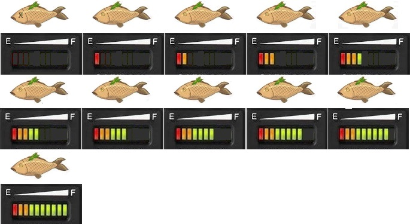
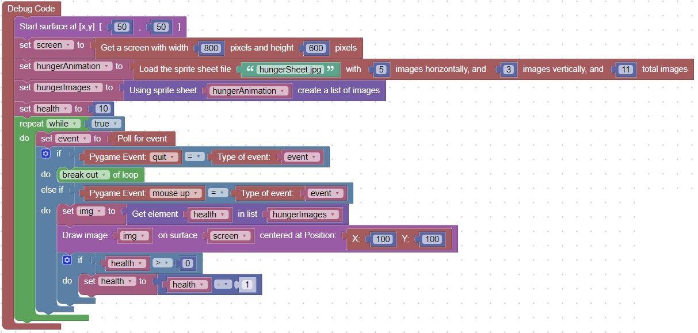

<H1>How to a dynamic hunger/health icon </h1>
This code will show a dynamic image based on the sprite sheet:<br>
<a href="images/hungerSheet.jpg"></a>
<hr>
The health starts at 10, and decreases with each click<br>
<br>
<hr>

